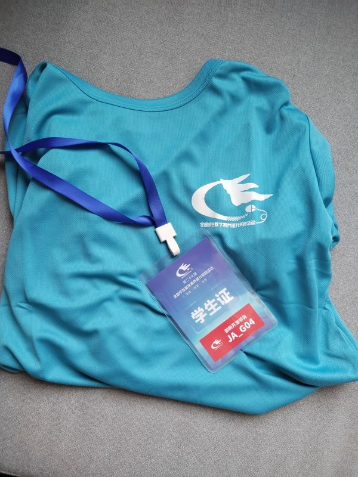
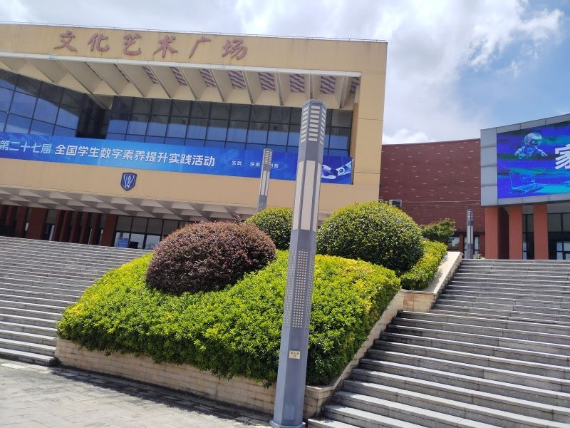
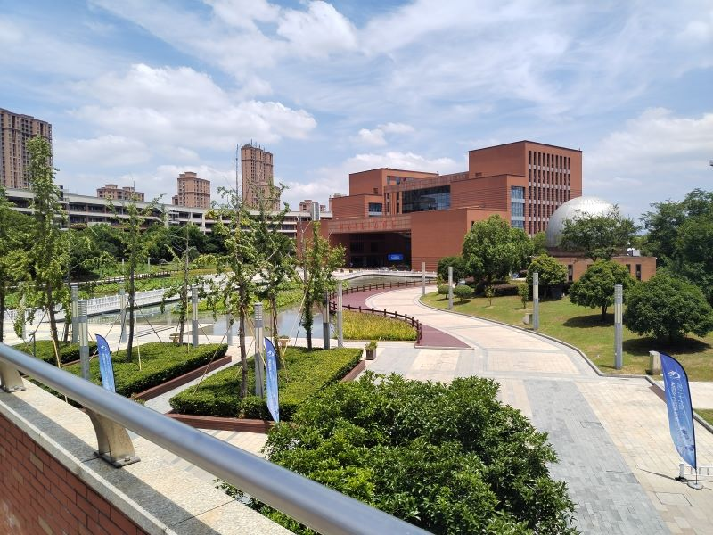
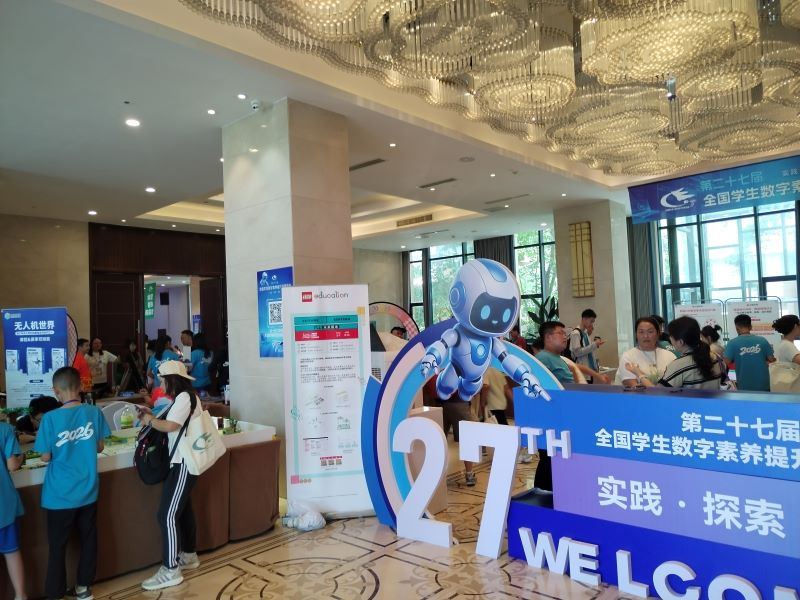

轰轰烈烈的第二十七届全国中小学生数字素养提升实践活动终于落下帷幕。几天前，我很荣幸以湖南省一等奖第一名的身份进入国赛（真的，有相关文件），这几天说实话我玩的很开心，我也想和大家分享一下自己的见闻
出发
7月24号一大早，我就来到火车站准备前往浙江诸暨。

我一个乡里别可算是见世面了，诸暨确实和株洲这个三线小城市不同，不过最让我大开眼界的是活动场地——海亮教育园，那里也是真的大，各种设施一应俱全，



很可惜的是我没有留太多照片，所以这篇文章我也不指望写成一篇游记了。
那天报完到，我并没有按预期中抓紧时间准备比赛，而只是简单检查一下开发环境，然后刷了一下午B站，打一下午烤。为什么我有如此胸有成竹的底气呢？我一直信奉小考小玩，大考大玩，而且反正是VibeCoding比赛，准备了也没啥用。
比赛现场
这次比赛依然允许使用AI，所以说句实话，某种意义上这次比赛比的是财力。虽然前几天我的群友@Sylphy免费借我使用GPT 5.6，但我不会在Codex中自定义接入点，所以将就着接入GitHub Copilot。我的主力模型还是DeepSeek V4 Pro，这个模型其实Agent能力很一般，只能说是及格线标准，但它速度快，而且很便宜呐。
到了比赛教室，我看到了来自各个省份的同学们。在我眼中，他们操着不同口音，有的说着一些我听不懂的技术术语，我觉得我所面对的对手还是很有挑战性的。
这次比赛总共8小时，我们要在8小时内完成一个校园资源流转系统。上次省赛大部分同学都使用网页实现，将界面做的花里胡哨的，而我是其中为数不多做成传统桌面应用的。也许当时我能在省赛中脱颖而出，有很大部分原因是使用qt，我也觉得网页这种东西在评委眼中“不受待见”。而这次，作为一个校园资源流转平台，网页具有无可替代的跨平台优势，并且方便最大用户群体——学生使用，我不得不用网页了。
我很快按照题目要求编写好提示词，发给GPT5.6，为了保证风格的一致性，我特意提及使用MDUI2前端组件库，因为我个人非常喜欢Material Design（所以我也一直很想要一台AOSP系统的手机）
然而，中转站的API真的太慢了，别人的页面已经在LivePreview中显示出轮廓，而我的GPT还正在思考，时不时reconnecting，这样下去可不行，于是我做出一个违背祖宗的决定：
两个AI并行开发！
我打算让GPT先专注于前端，然后用DeepSeek在另外一个文件夹中快速搭建好整个业务逻辑，最后两头会和。这样能弥补DeepSeek“不长眼”所带来的审美缺陷，又能保证开发效率。
但我从未这样做过，搞不好会花双倍的时间，开发效率一定是放在首位的
我将提示词复制好两份，让他们同时开干。为了最大限度节省时间，在AI生成过程中，我也在头脑风暴，在notepad写好下一轮欲发送的提示词。
事实证明，GPT的审美真的不赖，他遵照我的指示使用Material Design，却又发挥自己的小巧思让界面更符合题材；他也自己写了一些CSS，事实上我很不喜欢一些AI生成的CSS，因为通常它们的布局和配色都不尽人意，有股严重的“AI味”，而GPT 5.6 Sol生成的CSS一点都不招人讨厌，这么看来，最开始我费老大劲引入的MDUI2组件库显得格格不入，我通过引导让它逐步移除MDUI2组件并自行添加其它CSS
DeepSeek也不甘示弱，虽然他做出来的界面真的很丑，但后端逻辑（账号注册登录、权限分配、物流状态、上传资源管理和匹配等）已经基本可用，我改用SQLite进行数据永久化存储，并进一步添加功能。经过几轮优化，它编写的页面已经可以用PlayWright跑通整个业务逻辑，与此同时，GPT搭建的框架和样式已经有模有样，它正在思考后端实现，我果断打断它，让它保留自己的样式并接入DeepSeek的功能。
可即使这样，我也在等待中耽误太多时间，上午的4小时很快结束，我进入休息区，等待下午的4小时恶战。
一直用DeepSeek也不是个事，我之前没接触过这种比较高级的模型，总以为DeepSeek V4就是天花板级别了，中午我看了Agent跑分排名，果断花了50r整了个qwen 3.7 max
下午
经过上午4小时，大家的基本逻辑都搭建的差不多了，下午主要是体验优化，并且添加有亮点的创新性功能，也就是评委眼中真正的加分项。
为了保护好4个小时的成功，我初始化了git仓库并进行提交，事实上，这是我做的最正确的选择。
为什么会自动转接啊？
GitHub Copilot使用自定义接入点好好的，突然给我自动切换到GPT 5.5 mini。
换就换吧，5.5 mini的代码其实也很不错，而且生成速度也很快。
然而，我的免费额度很快用尽了，当我想切回自定义接入点的模型，发现切不回去了！
Copilot会自动选择他认为最合适的模型，一旦额度用完了那是真的没办法。
这个时候，我中午临时充值的千问就发挥用场了，但实测下来，跟DeepSeek比好不了多少。
pwsh我操你妈
写到一半，qwen突然在一个文件犹豫徘徊，它说遇到了文字化け（mojibake）我一看，输出的代码中文部分确实全部乱码了。
之前我更新到powershell7确实时不时出现这种问题，我都没当回事，因为很快就能解决。但这次，它在一个文件花了将近一个小时：它尝试写入文件，却遭遇截断；他想读取文件，却读到乱码，最后它甚至编写Python脚本试图干掉乱码，却无功而返。
时间在一分一秒流逝，此时的我过于紧张，不太记得具体是什么问题了。我终于忍无可忍，动用世界上最纯粹的力量：
git reset --hard HEAD
恢复到以前版本，乱码消失了，这时候pwsh又自己好了，你说诡不诡异？
后续的工作也还算顺利，但我忽略了一个严重的问题！
我是否该解耦？我的框架选择是否合理？
最开始DeepSeek默认使用SPA（单页应用）这种页面确实写起来很快，而且我也很容易理解，但app.js会无限扩展，最后堆成屎山，别说在生产环境部署了，现在看似还能写，但后期升级和扩展完全是地狱级别！
我平时很喜欢手写三剑客，对Vite，Vue有一点排斥，所以一开始没有让他用框架，而我现在后悔了：我只是省了npm run dev这个步骤而已，但带来的技术债仅在几小时内就显示出来——还好这只是一场比赛，如果是正式项目，框架选择带来的问题会滚雪球般越积越多。我曾经排斥它们，其实只是对CORS问题和500页面的恐惧，只是假想敌而已。
现在，我可能没时间切换框架，但我要迅速进行解耦。“良庖”的额度已经用完了，我将希望寄托于“族庖”。事实上，此时我的作品已经可以直接上交了，我也想到评委可能不会查看细节，但我要对我的网页负责。
砉然向然，奏刀騞然，巨大的JavaScript被分解为好几块，然而它们始终无法连在一起，网页也无法正常工作。离结束只有1小时了，我核对上交清单，还缺一个演示录屏。
我果断停止解耦并回滚到以前版本，打开Bandicam就是一顿操作，把视频录了。
结果偏偏这个时候显卡驱动出问题了，录出来的画面一闪一闪的。我电脑坏了之后确实有时会出这种问题，现在我没有时间再管devmgmt那些事了，我用最快速度重启并重新录屏，然后导入剪辑软件。
我在规定时间内完成任务，但这不代表比赛已经结束了。
屎盆子镶金边
这种“命题作文”大家的实现都大差不差，最重要的还是明天的答辩，要把自己的东西说的天花乱坠，凸显自己产品的卖点。
回到酒店，我只做简单休息，点个外卖，剩下的时间和PowerPoint度过。
我简单列出发言提纲——答辩时间有限制，只有5分钟，我不想玩虚的，那些“我观察到XX...为了解决XX问题，我做了XX”之类废话没必要多说，浪费自己和评委的时间，我应该主要演示程序的功能并展示主要亮点。